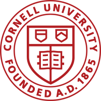
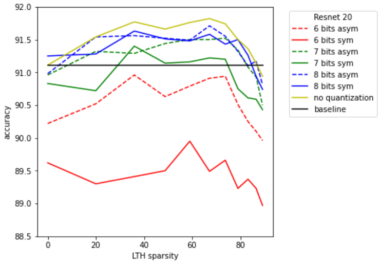
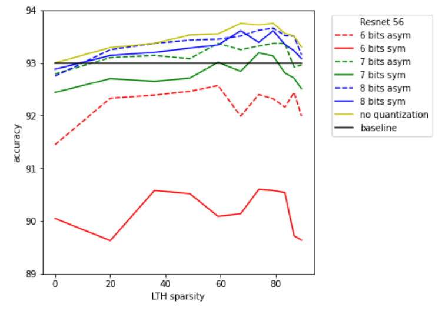
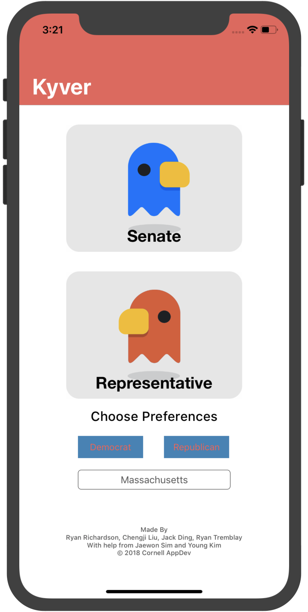
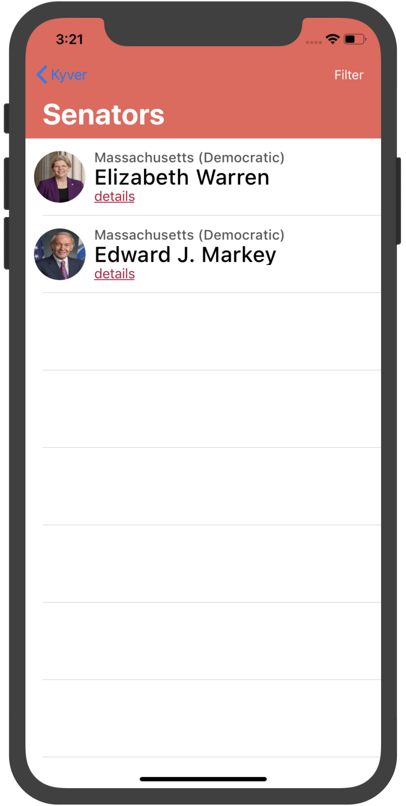
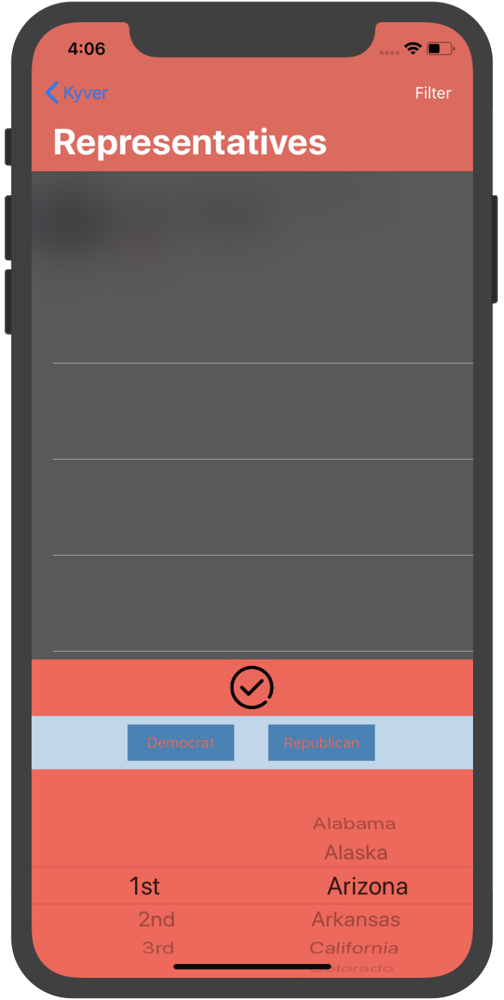
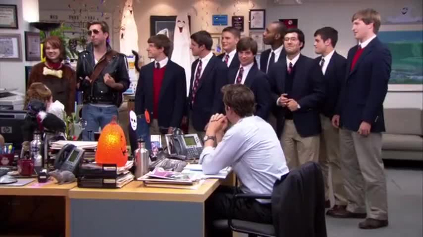

Skills
| Programming Languages: | Proficient in Python, Java, Swift, C, HTML, CSS, JavaScript; intermediate in C++, Ocaml, Matlab |
| Frameworks and Tools: | UNIX, Git, Vim, SSH; Backend: PostgreSQL, MySQL, MongoDB, Postman; Web: React.Js, Django; Mobile: Flutter; ML: Numpy, PyTorch, Scikit-learn, Keras; Math: Mathematica, Latex; QC: Qiskit, PennyLane |
| Programming: | Object Oriented Programming & Data Structure, Functional Programming, Algorithms Analysis, C++ & STL |
| Systems: | System Organization, Operating Systems Design & Implementation, Database Systems, UNIX Tools & Scripting |
| Software Development: | Web & IOS App Development, Machine Learning, Deep Learning, Natural Language Processing, Quantum Computing |
| Math and Physics: | Discrete Math, Linear Algebra, Linear and Nonlinear Analysis, Statistics & Probability, Quantum Mechanics |
Professional Experience
-
Next Capital Tech
Full Stack Developer, Data Engineer
Lindstrom, Minnesota Dec 2020 – Present
-
Lenovo
Backend Software Developer
Beijing, China May 2019 – August 2019
-
McMahon Lab
Machine Learning Research Assistant
Ithaca, New York August 2019 – Present
-
Cornell CIS and Physics Departments
Teaching Assistant
Ithaca, New York January 2019 – Present
 - Held office hours, hosted lab sections, and corrected assignments in 2020 Fall CS 3410 (System Organization & Programming).
- Supervised mechanics lab projects in 2019 Spring Phys 1112, 2019 Fall Phys 1116, 2020 Spring Phys 2214.
- Consulted homework parties in 2020 Spring Phys 2214.
Personal Projects
-
QCS
UNIX & Web Development
[https://github.com/cliu0013/quantum-computing-simulator]
December 2020
Can execute basic quantum operations including the Pauli-XYZ gates, single qubit rotations, Hadamard gates.
Can execute basic quantum operations including the Pauli-XYZ gates, single qubit rotations, Hadamard gates.
Calculations of Grover's algorithm, Shor's algorithm are supported. More algorithms will be put into the package. IBM Experience for the backend circuit plotting.
Deployed a website on AWS to calculate Quantum operations, algorithms, and circuits using Python with Qiskit and Pennylane. Created a UNIX program called QCS on Linux to parse regex and execute basic I/O commands projecting features of the web app. -
Quantizing Lottery Tickets
Machine Learning Experiment
[https://github.com/Xiuyu-Li/qlth]
December 2020
  Neural networks are computationally and memory intensive, creating challenges for deployment and inferences on edge devices.
Pruning is a common technique to reduce the size of a neural network by removing unnecessary structures within a larger model, fitting the model into cache memory and reducing power utilization.
The lottery ticket hypothesis states that neural networks contain subnetworks (“winning tickets”) of less than 10-20% of the network’s original size, which can be trained to a similar or higher accuracy.
Quantization is another technique that improves the energy efficiency and execution latency of neural networks by reducing weight precision. We propose a multi-step model compression scheme that combines the above two approaches by applying quantization on subnetworks pruned based on the Lottery Ticket Hypothesis.
We run experiments on MNIST/CIFAR10 using popular CNN models and show that this scheme could compress the network with a compress index of 24 to 121 while maintaining comparable classification performance. -
Cornell AppDev Hackathon
IOS App Development
[https://github.com/cliu0013/kyver-hack]
December 2018
   Kyver is an app that enables you search and contact a senator or representative of the United States.
ViewController has state filters and let the users to choose between the legislative lower body and the legislative upper body.
Features include filter through districts and party. By clicking on the table view cell, the users could get the details of the governor, such as his or her personal url, phone number, profile photos, address, and social media.
The users are able to contact the governor by clicking on the personal url to send emails, and click the phone number to call. There is a filter button to get the governors with specific district and party chosen.
We integrate the Google Civic Information API to get all of the information of the senators and representatives of the United States.
Hobbies
-
Singing
Cornell Chorale (as well as my kitchen and bathroom)
[https://www.cornellchorale.com/]
August 2018 – Present
 I am a bass singer at Cornell Chorale. I am still bad at singing but I really have been trying to improve my vocal.
Welcome to check out our performance in 2019 Summer (Stravinsky’s Symphony of Psalms) by clicking on Andy's or Jim's head.
I stood by the left edge of the bass section wearing a tuxedo with a bow tie. -
Writing
Freelance
[博客來]
[金石堂]
[香港二樓書店]
May 2020 – August 2020